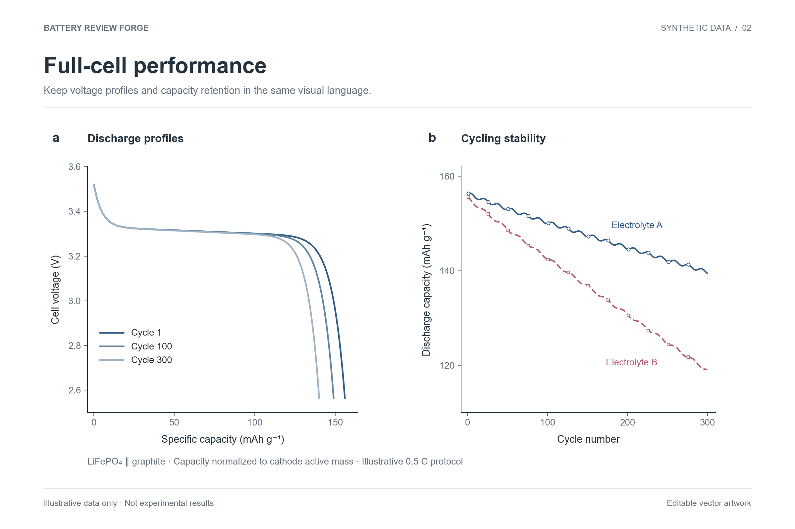
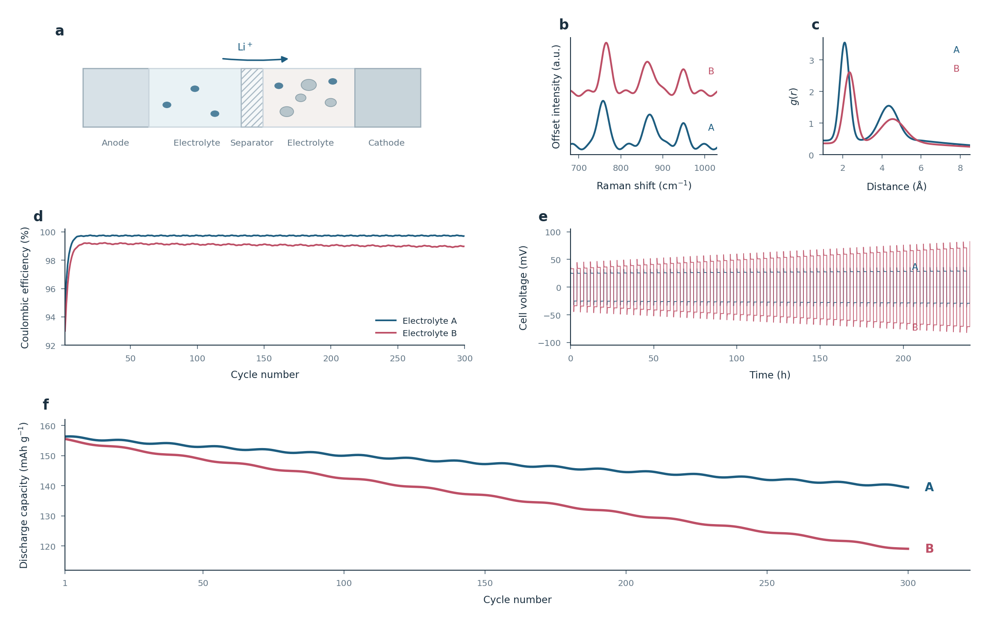
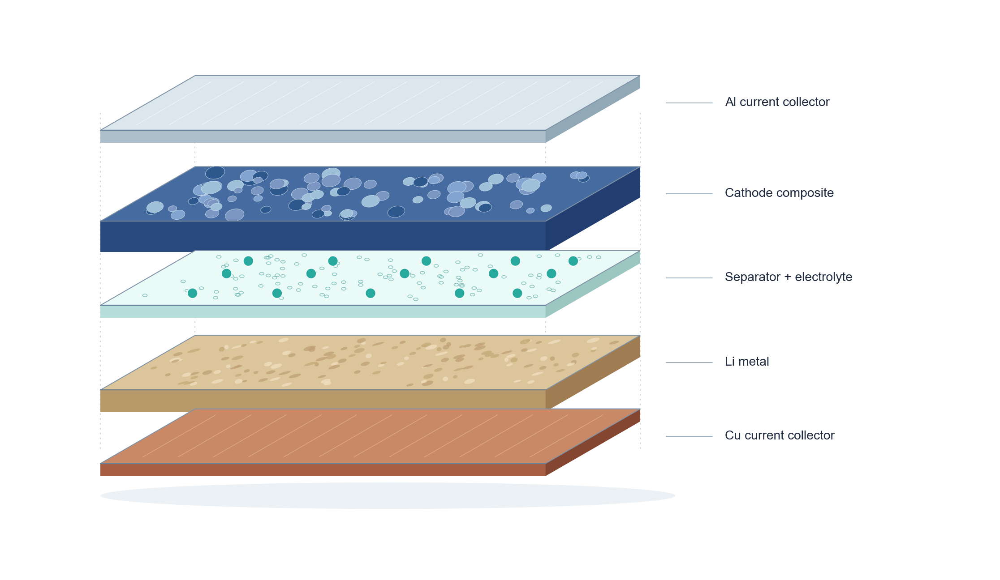

battery-review-forge给主题、提纲或草稿。它先盘点已有材料，再安排选题、证据、写作和返修的顺序。
给第一次使用的人
不用在这里上传文件。先看你要做哪件事，复制一句话，再把材料交给你已经在用的 AI 软件。没装好？先去选软件，看安装步骤。
不知道从哪开始
不用猜技能名，也不用先整理成标准格式。说清这是数据、图片还是论文就够了；不知道也可以直接发送。
这些是我手头的电池研究材料。请先告诉我你看到了什么、现在能做什么、还缺什么；然后建议一个最容易开始的预览。先不要改我的原始文件，也不要猜缺失的数值和条件。
手里有实验表格
适合循环容量、库伦效率、倍率、充放电曲线、对称电池电压等。先核对列名和单位，再决定画法。
把 CSV、Excel 或仪器导出的表格放在电脑上。知道电芯类型、测试条件就一起给；不知道的先空着，让助手指出来。
这是我的电池测试表格。请先看看列名、单位和电芯类型，告诉我能画哪些图、还缺什么条件。能确定的部分先画一版；不要猜数值。
图画好后，可以让它给你 SVG 和 PDF；需要改字或图例时，打开 SVG 微调。

看一张全电池样图 · 虚构数据 ↗手里有几张现成图片
先找最重要的图和阅读顺序，再检查坐标、比例尺、图例和字号。这样拼出来的图能讲清一件事。
给 2–8 张原图，PNG、TIFF、PDF、SVG 都可以。知道哪些图应该挨在一起，就顺手说一句；没有固定顺序也可以。
这几张图想拼成一张论文组合图。请先盘点每张图讲什么，找出主图和证据顺序；复杂的话给我三种小版式预览并推荐一种。若有面板字太小，告诉我需要哪份原始数据或可编辑文件来重出。别拉伸图片，也别裁掉坐标和比例尺。
如果某张图的字太小，最好从它的可编辑源文件重新导出。

看一张组合图样例 · 虚构数据 ↗脑子里有一个想法
电芯结构、反应路径、证据关系都能从文字开始。手绘草图或参考论文可以帮助手理解，但它会重新组织并画原创版本。
写一句这张图要讲什么；有手绘草图、数据或支持机制的论文，就一并给。没有草图也能先讨论构图。
我想为电池论文画一张示意图。下面是我的想法和材料。请先用一句话说出这张图要让读者看懂什么，区分已证实和推测的部分，再给我一个原创、可编辑的构图方案。
如果只有别人的成图，先把它当表达参考；论文中需要的数值和结构仍要找原始依据。

看一张电芯示意样图 ↗准备写一篇电池综述
不需要第一天就备齐所有论文。先让助手看看已有的提纲、草稿和文献，指出最值得先做的一步。
给一个主题，或已有的提纲、草稿、文献清单。期刊还没定也可以先开始规划。
我准备写一篇电池综述，这是目前的主题和材料。请先看已有内容，判断文章最清楚的问题和范围，找出需要核实的关键文献，再给我一个可以逐步完成的写作计划。先做能确定的部分。
长综述可以分几次做；每次把已核实的来源和未解决的问题记下来，下一次接着走。
想找具体的一项
这些英文名字是软件识别用的。你说中文任务也可以，助手会按材料选用。
battery-review-forge给主题、提纲或草稿。它先盘点已有材料，再安排选题、证据、写作和返修的顺序。
battery-review-plan给研究方向。请它找相近综述，帮你确定这篇文章真正要回答的问题。
battery-literature-map给主题或已有论文。让它记录搜到、读到和真正纳入的文献，避免混在一起。
battery-claim-check给正文句子和引用的论文。请它指出原文哪一处支持，哪一处还没核实。
battery-metrics-audit给要对比的容量、效率或寿命。先核电芯类型、分母和测试条件，再决定能否放一张图。
battery-review-write给大纲与已核实的文献。按论点组织段落，不把没读到的结果写成事实。
battery-review-figure给表格、图的想法或草图。先检查内容，再做可编辑的单张图或示意图。
battery-figure-assemble给现成图片。让它统一面板尺寸、字母和留白，同时保住坐标和比例尺。
battery-review-polish给段落，说明要精简、翻译还是调整表达；数字、术语和结论强度照原意保留。
battery-review-audit给接近完成的稿件。它按论点、文献、图表和前后用词列出优先修改项。
battery-reviewer给一份固定版本的稿件，让它独立指出说服力不足和证据缺口。
battery-review-submission给目标期刊和稿件。它核对当前要求，整理投稿前还要补的材料。
battery-review-response给审稿意见和修改稿。它把每条意见与改动位置对应起来，再起草回复。
安装时卡住了
大多数时候不需要重新下载。看看是哪一步停住，再处理那一步。
确认安装窗口显示复制完成，然后新开一个 AI 任务。旧会话可能还没读到新技能。
电脑里已有同名技能。先看旧版是否要保留；确认更新后，再照 Codex 安装卡片里的“已有旧版”步骤操作。
把完整报错文字发给你正在用的 AI 软件，请它指出缺的是安装、Python 依赖还是数据字段。不要把密钥或私人数据一起贴出。